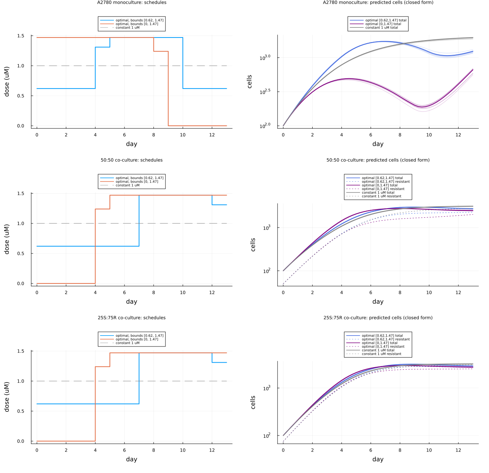

Same problem as OptimalControlOne: 13 daily doses, mean dose fixed at 1.0 uM by the same shift-and-clamp projection, minimise total cells at day 13. Model: recovered closed form (kill_S = v² + v³·ρ; kill_R = v·ρ + H(v; 0.8, 2)), 8-member bootstrap ensemble; objective = mean + 0.5·sd of log final total across members (robust). Optimiser: multistart L-BFGS with exact gradients; BlackBoxOptim cross-check. Each schedule is also scored under the UDE (mean over 5 seeds) and Hill ensembles. All models are autonomous, so a schedule can be planned from any state. Runtime: 3.5 min.
rel_to_constant = final total relative to constant 1 uM (closed form). support flags doses or exposure patterns the training data never covered; treat those predictions as extrapolation.
| scenario | setting | schedule | mean_dose | total_closed | total_closed_sd | R_frac_closed | total_ude | total_hill | support | rel_to_constant |
|---|---|---|---|---|---|---|---|---|---|---|
| A2780 monoculture | bounds [0.62, 1.47] (as OptimalControlOne) | OPTIMAL (closed form) | 1 | 1333 | 88.36 | 6.047e-08 | 1424 | 1082 | 2 dose changes (training has ≤ 1) | 0.7126 |
| A2780 monoculture | bounds [0.62, 1.47] (as OptimalControlOne) | optimal under UDE | 1 | 1355 | 88.45 | 8.916e-08 | 1326 | 1345 | 2 dose changes (training has ≤ 1) | 0.7245 |
| A2780 monoculture | bounds [0.62, 1.47] (as OptimalControlOne) | constant 1 uM | 1 | 1870 | 72.66 | 3.6e-08 | 2039 | 1710 | within training support | 1 |
| A2780 monoculture | bounds [0.62, 1.47] (as OptimalControlOne) | front-loaded (max first) | 1 | 1780 | 95.61 | 8.698e-08 | 1827 | 2068 | within training support | 0.9519 |
| A2780 monoculture | bounds [0.62, 1.47] (as OptimalControlOne) | back-loaded (max last) | 1 | 1812 | 97.46 | 1.928e-08 | 1998 | 1226 | within training support | 0.9689 |
| A2780 monoculture | bounds [0.62, 1.47] (as OptimalControlOne) | 1 uM on d0-6, off after (as data) | 0.5385 | 3352 | 83.9 | 8.01e-09 | 3120 | 3312 | within training support | 1.792 |
| A2780 monoculture | bounds [0.62, 1.47] (as OptimalControlOne) | off d0-6, 1 uM after (as data) | 0.4615 | 2748 | 65.45 | 2.527e-09 | 2767 | 2590 | within training support | 1.469 |
| A2780 monoculture | bounds [0.62, 1.47] (as OptimalControlOne) | constant 1.47 uM | 1.47 | 30.71 | 5.86 | 1.59e-05 | 44.24 | 73.07 | within training support | 0.01642 |
| A2780 monoculture | bounds [0.62, 1.47] (as OptimalControlOne) | no drug | 0 | 3571 | 87.24 | 2.47e-09 | 3749 | 3429 | within training support | 1.909 |
| A2780 monoculture | bounds [0, 1.47] (drug holidays allowed) | OPTIMAL (closed form) | 1 | 720.3 | 89.09 | 5.73e-07 | 1077 | 1244 | 2 dose changes (training has ≤ 1) | 0.3851 |
| A2780 monoculture | bounds [0, 1.47] (drug holidays allowed) | optimal under UDE | 1 | 767.4 | 71.94 | 1.886e-07 | 734.7 | 677 | 3 dose changes (training has ≤ 1) | 0.4103 |
| 50:50 co-culture | bounds [0.62, 1.47] (as OptimalControlOne) | OPTIMAL (closed form) | 1 | 2559 | 177.4 | 0.4864 | 2412 | 2126 | within training support | 0.8821 |
| 50:50 co-culture | bounds [0.62, 1.47] (as OptimalControlOne) | optimal under UDE | 1 | 2572 | 190.7 | 0.5395 | 2399 | 2247 | 2 dose changes (training has ≤ 1) | 0.8868 |
| 50:50 co-culture | bounds [0.62, 1.47] (as OptimalControlOne) | constant 1 uM | 1 | 2901 | 144.5 | 0.7246 | 2801 | 2787 | within training support | 1 |
| 50:50 co-culture | bounds [0.62, 1.47] (as OptimalControlOne) | front-loaded (max first) | 1 | 3121 | 111.8 | 0.8588 | 3047 | 3144 | within training support | 1.076 |
| 50:50 co-culture | bounds [0.62, 1.47] (as OptimalControlOne) | back-loaded (max last) | 1 | 2676 | 161.7 | 0.5712 | 2571 | 2366 | within training support | 0.9225 |
| 50:50 co-culture | bounds [0.62, 1.47] (as OptimalControlOne) | 1 uM on d0-6, off after (as data) | 0.5385 | 3379 | 59.13 | 0.5134 | 3484 | 3507 | within training support | 1.165 |
| 50:50 co-culture | bounds [0.62, 1.47] (as OptimalControlOne) | off d0-6, 1 uM after (as data) | 0.4615 | 2835 | 57.74 | 0.2154 | 2888 | 2862 | within training support | 0.9773 |
| 50:50 co-culture | bounds [0.62, 1.47] (as OptimalControlOne) | constant 1.47 uM | 1.47 | 2690 | 108.2 | 0.9366 | 2511 | 2834 | within training support | 0.9272 |
| 50:50 co-culture | bounds [0.62, 1.47] (as OptimalControlOne) | no drug | 0 | 3633 | 62.18 | 0.2166 | 3763 | 3523 | within training support | 1.253 |
| 50:50 co-culture | bounds [0, 1.47] (drug holidays allowed) | OPTIMAL (closed form) | 1 | 2460 | 221.8 | 0.4724 | 2247 | 2144 | dose between 0 and 0.62 uM (untested); 3 dose changes (training has ≤ 1) | 0.848 |
| 50:50 co-culture | bounds [0, 1.47] (drug holidays allowed) | optimal under UDE | 1 | 2466 | 225.1 | 0.5037 | 2234 | 2200 | 2 dose changes (training has ≤ 1) | 0.8501 |
| 25S:75R co-culture | bounds [0.62, 1.47] (as OptimalControlOne) | OPTIMAL (closed form) | 1 | 2746 | 117.4 | 0.6906 | 2675 | 2732 | within training support | 0.9041 |
| 25S:75R co-culture | bounds [0.62, 1.47] (as OptimalControlOne) | optimal under UDE | 1 | 2766 | 123.6 | 0.7273 | 2665 | 2848 | 2 dose changes (training has ≤ 1) | 0.9106 |
| 25S:75R co-culture | bounds [0.62, 1.47] (as OptimalControlOne) | constant 1 uM | 1 | 3038 | 105.7 | 0.869 | 3002 | 3202 | within training support | 1 |
| 25S:75R co-culture | bounds [0.62, 1.47] (as OptimalControlOne) | front-loaded (max first) | 1 | 3210 | 85.55 | 0.9369 | 3205 | 3421 | within training support | 1.057 |
| 25S:75R co-culture | bounds [0.62, 1.47] (as OptimalControlOne) | back-loaded (max last) | 1 | 2847 | 112 | 0.7679 | 2803 | 2917 | within training support | 0.9374 |
| 25S:75R co-culture | bounds [0.62, 1.47] (as OptimalControlOne) | 1 uM on d0-6, off after (as data) | 0.5385 | 3487 | 114.2 | 0.7763 | 3695 | 3626 | within training support | 1.148 |
| 25S:75R co-culture | bounds [0.62, 1.47] (as OptimalControlOne) | off d0-6, 1 uM after (as data) | 0.4615 | 2957 | 69.57 | 0.4585 | 3046 | 3121 | within training support | 0.9735 |
| 25S:75R co-culture | bounds [0.62, 1.47] (as OptimalControlOne) | constant 1.47 uM | 1.47 | 2713 | 104.9 | 0.9591 | 2623 | 3055 | within training support | 0.8933 |
| 25S:75R co-culture | bounds [0.62, 1.47] (as OptimalControlOne) | no drug | 0 | 3782 | 146.4 | 0.4776 | 3819 | 3610 | within training support | 1.245 |
| 25S:75R co-culture | bounds [0, 1.47] (drug holidays allowed) | OPTIMAL (closed form) | 1 | 2673 | 132.2 | 0.6712 | 2539 | 2795 | dose between 0 and 0.62 uM (untested); 2 dose changes (training has ≤ 1) | 0.8798 |
| 25S:75R co-culture | bounds [0, 1.47] (drug holidays allowed) | optimal under UDE | 1 | 2674 | 131.2 | 0.6791 | 2537 | 2807 | 2 dose changes (training has ≤ 1) | 0.8801 |
| scenario | setting | gradient_obj | bbo_obj | max_dose_diff |
|---|---|---|---|---|
| A2780 monoculture | bounds [0.62, 1.47] (as OptimalControlOne) | 7.226 | 7.314 | 0.2156 |
| A2780 monoculture | bounds [0, 1.47] (drug holidays allowed) | 6.637 | 6.96 | 1.281 |
| 50:50 co-culture | bounds [0.62, 1.47] (as OptimalControlOne) | 7.879 | 7.909 | 0.2886 |
| 50:50 co-culture | bounds [0, 1.47] (drug holidays allowed) | 7.849 | 7.869 | 0.9316 |
| 25S:75R co-culture | bounds [0.62, 1.47] (as OptimalControlOne) | 7.938 | 7.96 | 0.7486 |
| 25S:75R co-culture | bounds [0, 1.47] (drug holidays allowed) | 7.914 | 7.934 | 1.008 |
